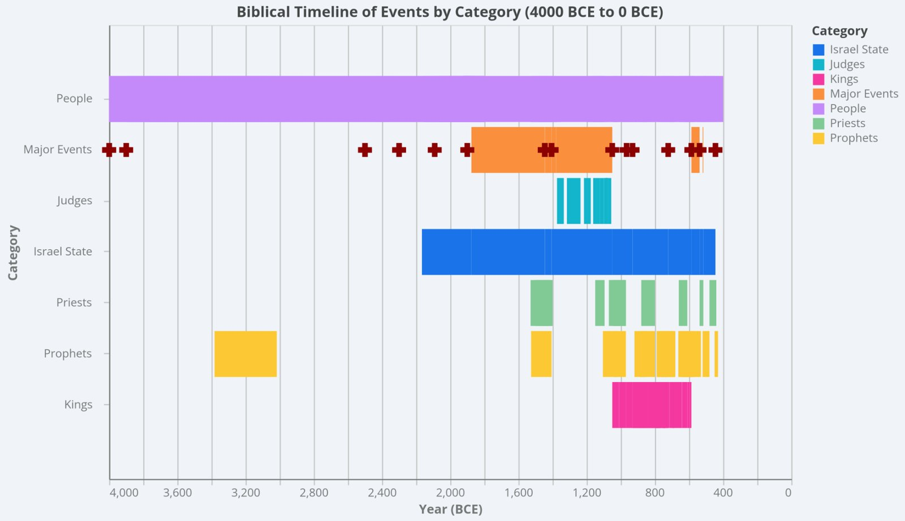
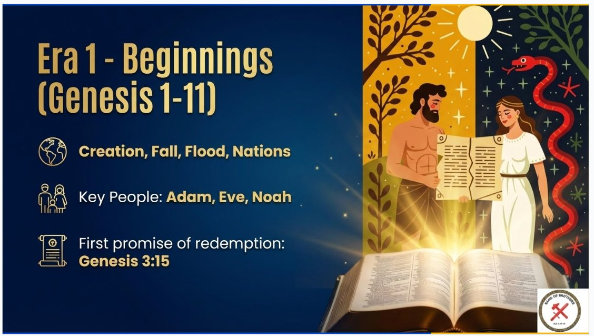
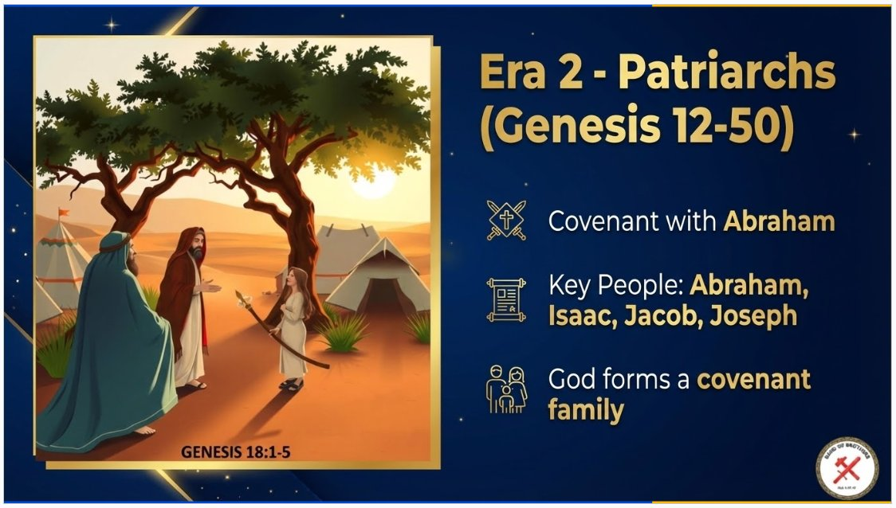
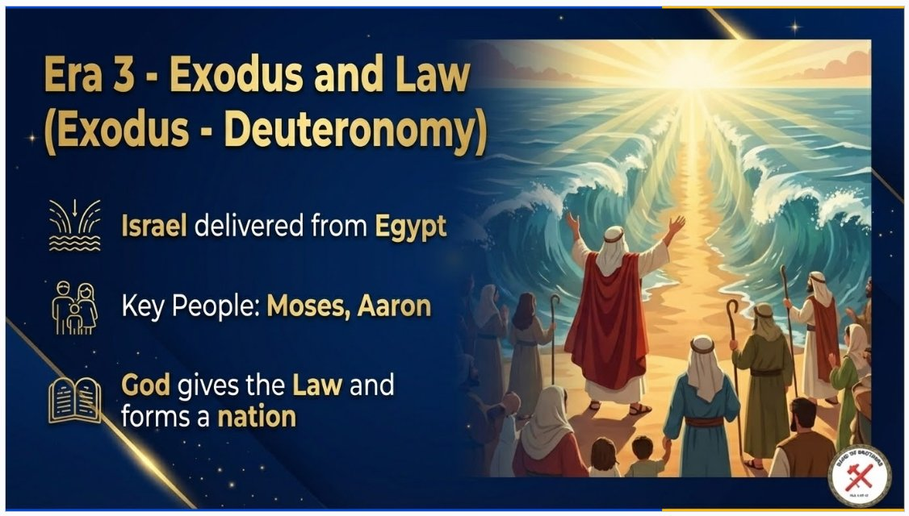
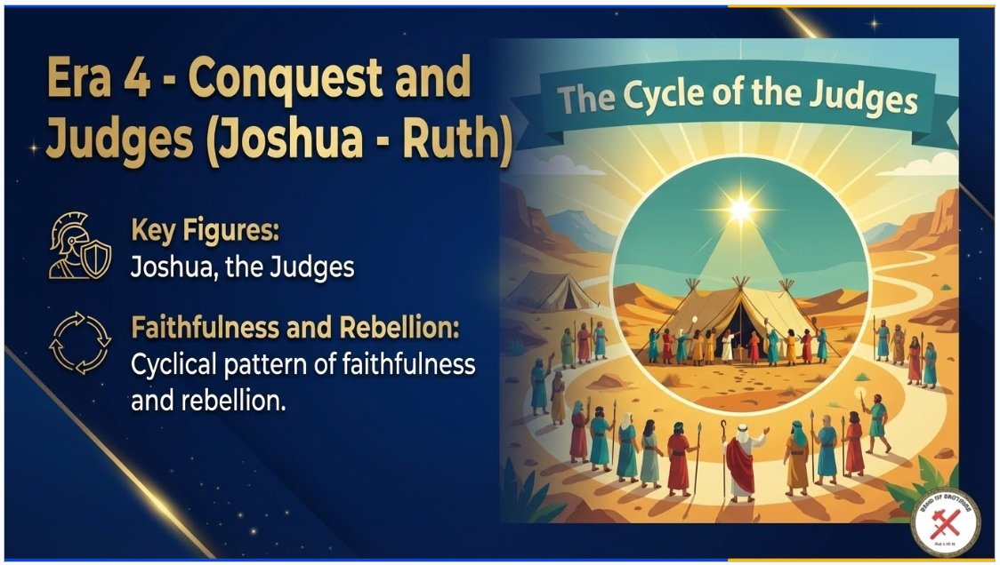
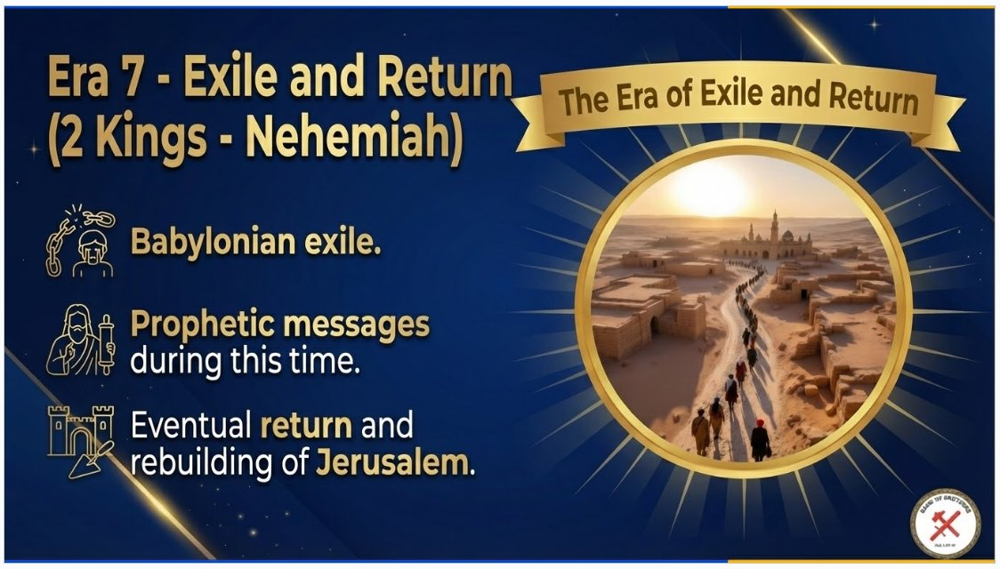
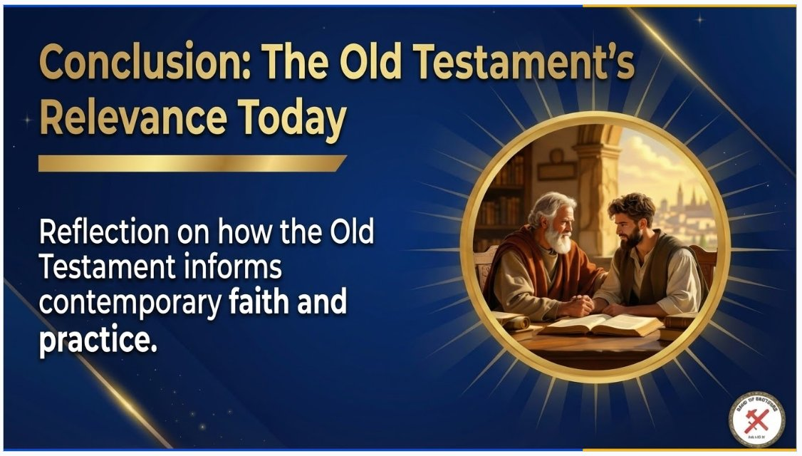

Getting closer on this one. I'm still struggling to make the database-to-graphical display look better, and the filter option needs to be more user friendly, but I made good progress today — I think I'll have it done tonight. What's nice is that once the underlying database exists, it's very easy to hand it to any other AI tool and get more analysis out of it. The screenshots below were all generated just by attaching my Bible database and asking AI to build a PowerPoint presentation from it — nothing else requested.
Related confession: I've said in past meetings that I struggle with being a Christian more in head knowledge than in humility and obedience. I love the verse “knowledge puffs up, but love builds up” (1 Corinthians 8:1), even though it's a lot easier for me to quote it than to live it. Hopefully Satan doesn't use all this AI tooling just to make me more of a head-knowledge Christian than ever.

From there, I asked AI to turn the data into a slide deck — “Blueprint of Redemption: A Survey of the Old Testament,” covering seven eras from Beginnings through Exile and Return:






Comments